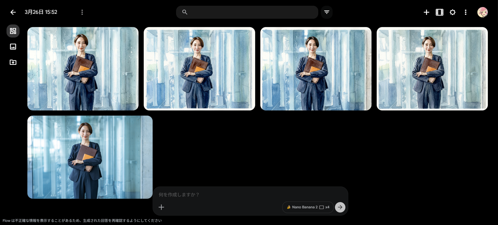
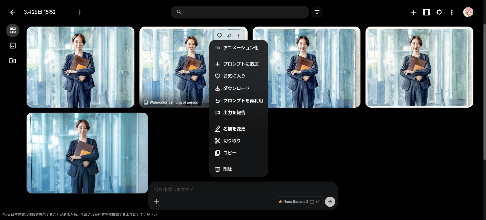

Google Flow 画像生成マニュアル：水彩画風ポートレートの作成
Google Flowを使用して、お手持ちの写真から高品質な水彩画風の画像を生成する基本的な流れを説明します。
Google Flow
https://labs.google/fx/ja/tools/flow
https://labs.google/fx/ja/tools/flow
ステップ 1：新しいプロジェクトの開始
Google Flowのホーム画面で、中央にある 「＋新しいプロジェクト」 ボタンをクリックして、新しい制作キャンバスを開きます。

ステップ 2：画像のアップロード【重要】
画面下部の入力エリアにある 「＋」アイコン をクリックします。表示された「アセットを検索する」という枠の中にある アップロードアイコン
をクリックし、変換したい画像（例：sample_face.jpg）を選択してアップロードします。
📌 重要: 画面右上の「メディア追加」ボタンを使用するとプロンプトに画像が紐づかないため、必ずこの手順で行い、入力エリア内に「画像のチップ（小さなサムネイル）」が表示されたことを確認してください。

ステップ 3：プロンプト（指示文）の入力
画像チップが表示されている状態で、入力エリアに詳細な指示文を入力します。以下のプロンプトを使用してください。
A natural watercolor painting. [IDENTITY PRESERVATION: MAX] [COMPOSITIONAL FIDELITY: MAX] [ENVIRONMENT: ORIGINAL] Strictly maintain the person's facial features and the exact background, furniture, and environmental layout from the reference image. Soft colors, diffused natural light, and authentic watercolor textures.
※上記をコピーして貼り付けた後、必要に応じて以下の翻訳内容を確認してください。
【日本語訳（内容理解用）】
自然な水彩画。[人物の同一性保持：最大] [構図の忠実性：最大] [環境：オリジナルを維持] 参照画像の人物の顔の特徴と、背景、家具、環境の配置を正確に維持してください。柔らかい色彩、拡散した natural
light、そして本物の水彩画のような質感。

【補足】生成設定パネルの使い方
- 画像 / 動画: 「画像」を選択します。
- 比率（サイズ）:
1:1や16:9など、用途に合わせて選びます。 - 枚数（x1 〜 x4）: 比較しやすい「x4」がおすすめです。
- モデル:
Nano Banana 2を選択します。
ステップ 4：画像の生成
プロンプト入力後、右側の 「生成（矢印アイコン）」 をクリックします。完了まで数秒待ちます。

ステップ 5：保存とダウンロード
プロジェクト名を分かりやすい名前に変更し、以下のいずれかの方法で保存します。
- 1枚ずつ保存する場合: 気に入った画像の右上にある 三点リーダー から「ダウンロード」を選択します。
- 一括で保存する場合: 画面右上にある 三点リーダー をクリックし、ZIP形式で保存します。

💡 ヒント: AIによる生成結果が期待と異なる場合は、プロンプトの言葉を少し変え、再度「生成」をクリックして試してください。